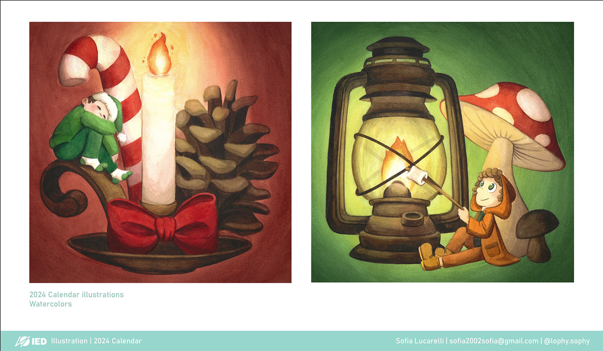
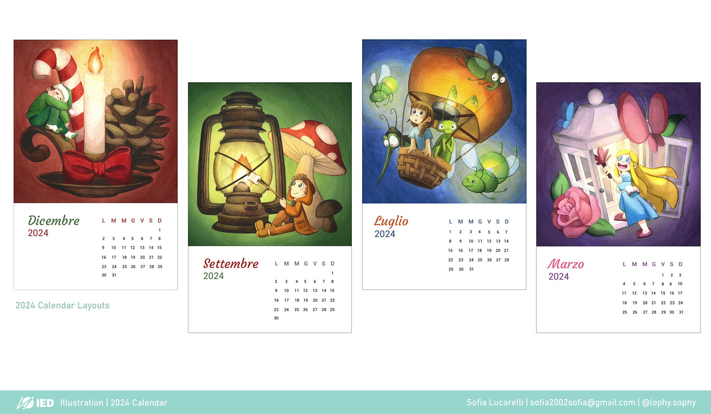
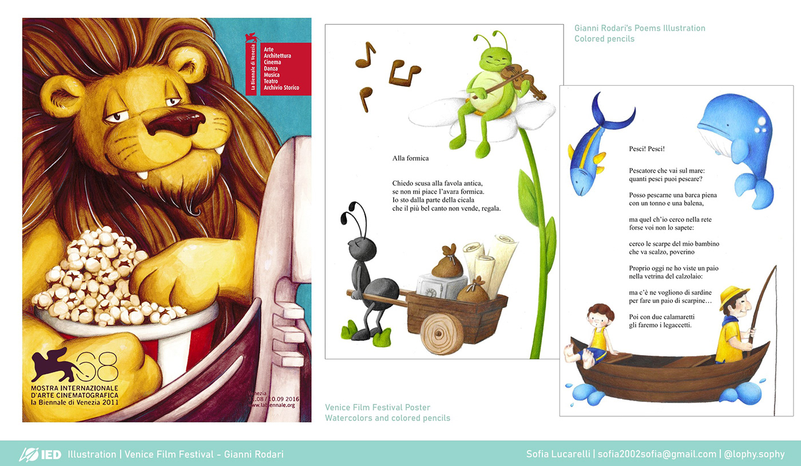
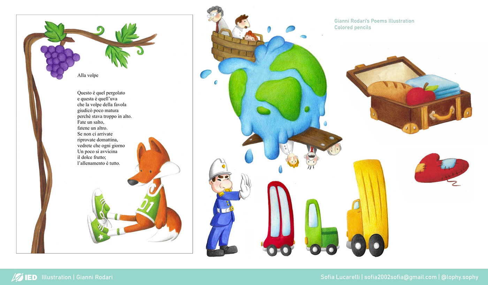
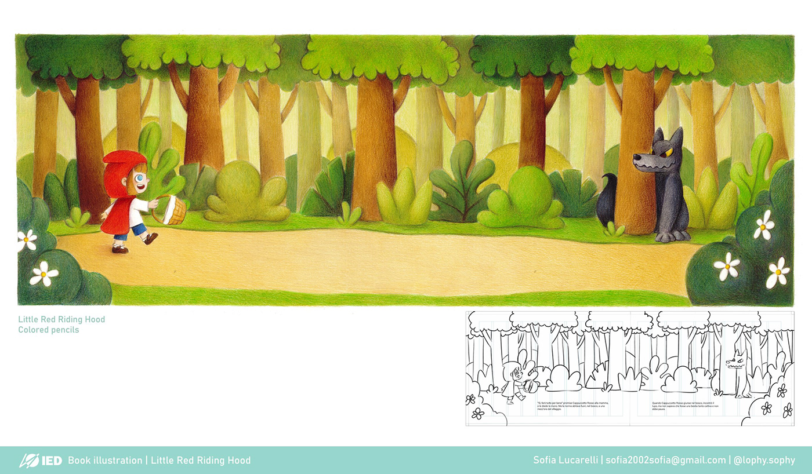
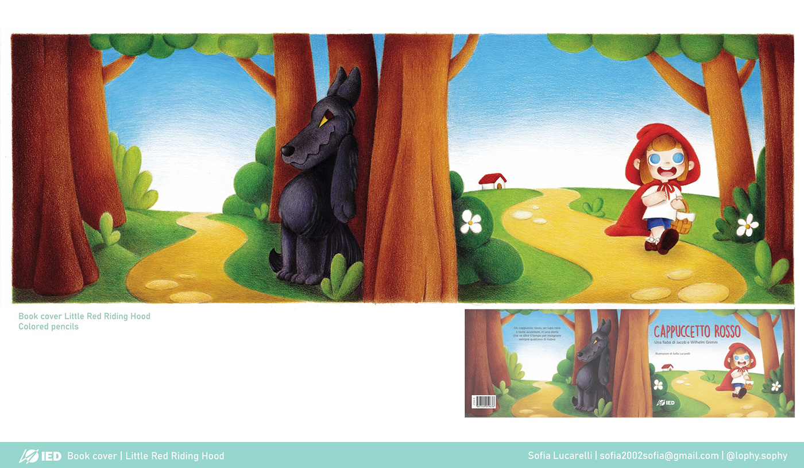
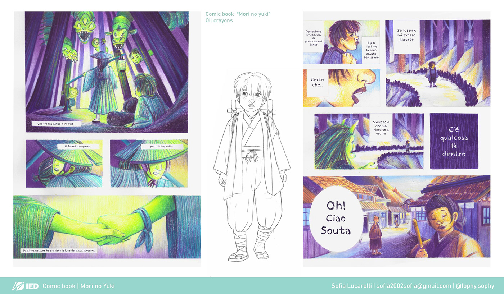
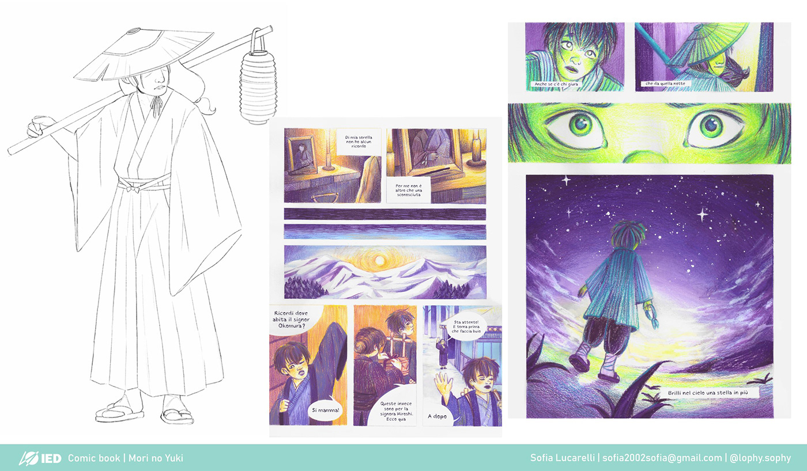
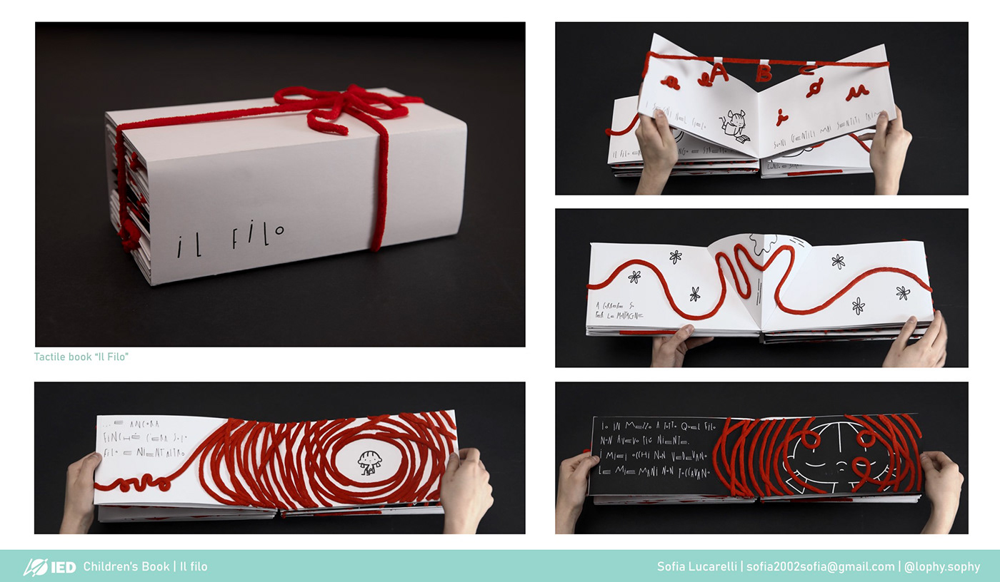
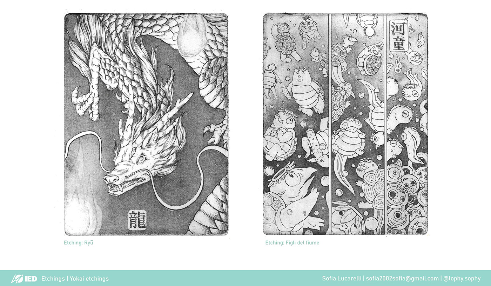

Illustration
WatercolorEtchingPrintmaking
Before working digitally I trained in traditional media, and I keep returning to them. The pieces below are watercolors, etchings and prints, where slow processes and physical textures shape the final image. What I learn at the table, about patience, value and restraint, feeds directly into my digital work.










